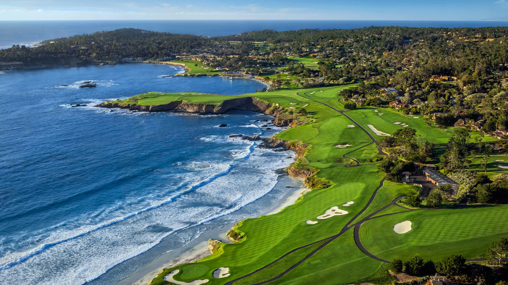
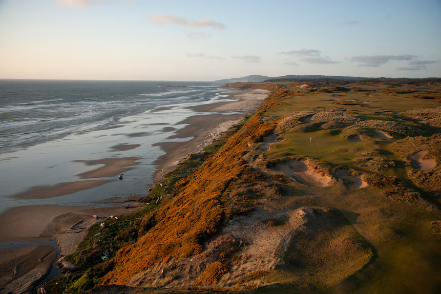

Agenda
- Determine Budget Limits and Number of Golfers
- Discuss Potential Golf Venues
- Finalize Decision on Golf Course
- Concerns to Address
- Wrap Up and Outline Meeting No. 3
Attendance
Present
- John Smith
- Rory Mcilroy
- Bryson Dechambeau
- Tony Finau
Absent
- Justin Rose
- Fred Riley
- Thomas Tucker
Opening Remarks from President Joshua Pham
Audio Remarks
Potential Golf Venues
Pebble Beach Golf Course
“Most iconic coastline course” - Golf Digest
Not just the greatest meeting of land and sea in American golf, but the most extensive one, too, with nine holes perched immediately above the crashing Pacific surf—the fourth through 10th plus the 17th and 18th. Pebble’s sixth through eighth are golf’s real Amen Corner, with a few Hail Marys thrown in over an ocean cove on the eighth from atop a 75-foot-high bluff. Pebble hosted a successful U.S. Amateur in 2018 and a sixth U.S. Open in 2019. Recent improvements include the redesign of the once-treacherous 14th green, and reshaping of the par-3 17th green, both planned by Arnold Palmer’s Design Company a few years back—and the current changes to the iconic eighth hole. Pebble Beach hosted the Women's U.S. Open for the first time in 2023. (Golf Digest)
Pacific Dunes Golf Course
This was the second course constructed at Bandon Dunes Resort and the highest ranked among the resort’s five 18s. To best utilize ocean frontage, Tom Doak came up an unorthodox routing that includes four par 3s on the back nine. Holes seem to emerge from the landscape rather than being superimposed onto it with rolling greens and rumpled fairways framed by rugged sand dunes and marvelously grotesque bunkers. The secret is Doak moved a lot of earth in some places to make it look like he moved very little, but the result is a course with sensual movements, like a tango that steps toward the coast and back again, dipping in and out of different playing arenas from the secluded sand blowouts to the exposed bluffs and all variations in between. (Golf Digest)
Meeting Goals
Goals: final decision on venue, budgeting, next meeting logistics.
Summary
We have decided to choose Pebble Beach as our destination, and allocated a budget of $10,000 for the trip. We have an attendance of 12 members who will each bring their own clubs.
Details of Next Meeting
Meeting No. 3 will be held at Augusta National Golf Course at 4:00 PM.